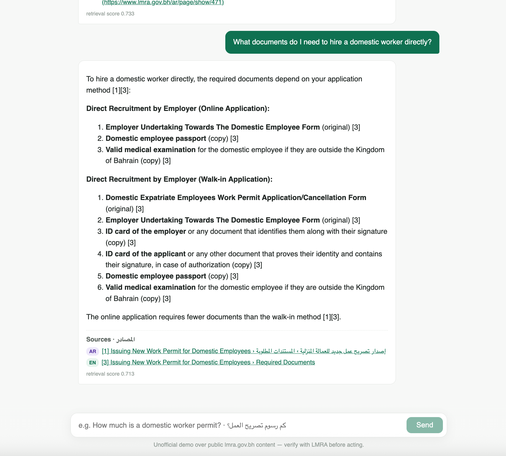
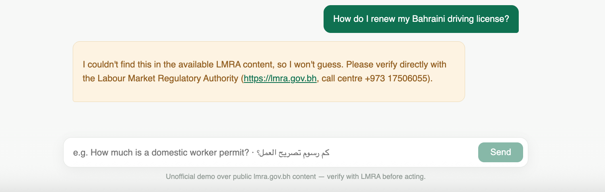
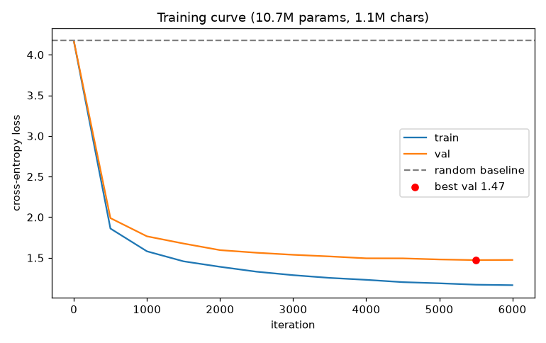
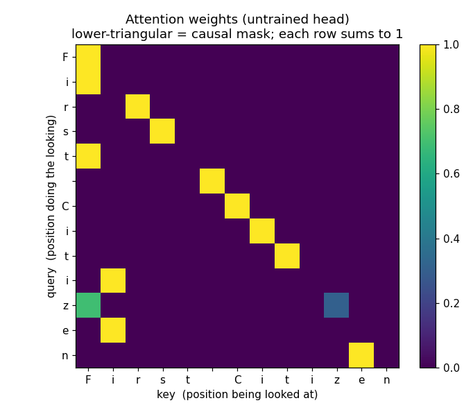

I build ML systems from first principles and evaluate them before I trust them — a GPT written in raw PyTorch, a bilingual English/Arabic RAG system with a measured abstention guarantee, an agent loop with no framework.
First-class BSc (Hons) Computer Science with Management, King's College London (with distinction). Previously an intern on KPMG's AI team. Starting an AI/ML master's soon.
Open to a one-year ML/AI engineering role before my master's
01 — Work
Featured projects
Three projects, built end to end. Every number below is a real, reproducible artifact from the linked repository — training curves, eval tables, screenshots.
Bilingual RAG over Bahrain's labour authority (LMRA)
Cross-lingual retrieval + cite-or-abstain guardrails over official English/Arabic government content
A retrieval-augmented assistant that answers questions about Bahraini work permits and labour services in English or Arabic, retrieving from a corpus that contains both — because some authoritative content (board resolutions, several laws) exists only in Arabic. Every answer cites the official page it came from; when the corpus doesn't cover a question, the system abstains with a fixed template instead of guessing.
The technically interesting part is cross-lingual retrieval in one shared embedding space. Measured on this corpus: parallel EN/AR chunk pairs sit at mean cosine 0.781 vs 0.548 for random cross-language pairs — meaning dominates the geometry, language barely registers. The hardest case (casual English questions against Arabic-only legal prose) initially failed, and was fixed with query-time bilingual expansion: translate the query, embed both versions, score chunks by the max — so no LLM-generated text ever enters the index of a civic-information system.
Abstention is enforced structurally, in three layers: a retrieval-score gate (below threshold, the LLM is never called), a grounding-only prompt with an explicit refusal marker, and a citation post-check. Refusals display a deterministic template, never model prose — testing showed the model names other authorities even when instructed not to.
Evaluation — 39 cases, LLM-judged faithfulness
metric
overall
EN
AR
cross-lingual
retrieval hit@6
33/33
18/18
15/15
9/9
citation correct
33/33
18/18
15/15
9/9
faithfulness SUPPORTED
32/33
17/18
15/15
9/9
abstained on out-of-corpus
6/6
3/3
3/3
—
false abstention
0/33
0/18
0/15
0/9
Because that table is measured on cases the system was iterated against, a held-out set of 15 fresh questions was run exactly once, results reported as-is: retrieval 12/12, citations 10/10, faithfulness 10/10, cross-lingual 3/3 — and 2/12 false abstentions on two-part questions, an honest cost of the safety-first refusal policy, documented rather than tuned away. The eval harness caught two real bugs during development: a chunking bug that silently dropped section headings (making entire FAQ questions unretrievable) and a misattributed hotline number that no string metric would have flagged.

English question, bilingual sources — note the AR badge on citation [1]: the answer assembles from whichever language version ranks best.

Out-of-corpus question → deterministic abstention template, no improvisation.
Stack
Python, BGE-M3 embeddings (sentence-transformers), Anthropic API (generation + LLM judge), FastAPI, single-file React chat UI, custom crawler/extractor — no vector DB by choice: 1,133 chunks × 1024 dims is one visible matmul.
shakespeare-gpt — a GPT from scratch in raw PyTorch
No HuggingFace, no transformer libraries: every component implemented from first principles
A character-level GPT built and trained from scratch: tokenizer, token/position embeddings, multi-head causal self-attention, pre-norm residual transformer blocks, the training loop, and the sampler are all hand-written PyTorch. Training uses AdamW with LR warmup + cosine decay, weight tying, dropout, gradient clipping, and early stopping on validation loss; sampling supports temperature, top-k, top-p and greedy decoding.
Results
model
params
corpus
best val loss
perplexity
vs. random (61)
Baseline
0.8M
98K chars
1.59
4.9
−61%
Scaled (full corpus)
11M
1.1M chars
1.47
4.4
−65%
The instructive result is the comparison: on the 98K-character slice the small model overfits — validation loss bottoms at 1.59 and climbs to 2.21 as it memorizes. Trained on the full 1.1M-character corpus, the 11M-parameter model reaches validation perplexity 4.36 (loss 1.47) with only a mild train/val gap (~0.30), held in check by dropout and early stopping. Scaling the data ~11× is what turns memorization into generalization.

Training curve, 10.7M params on the full corpus. Best validation checkpoint (1.47) saved by early stopping.

Learned causal self-attention weights — one of several explanatory figures generated by the project.
Stack
Python, PyTorch (only), matplotlib for diagnostics. Auto-selects CUDA / Apple-Silicon MPS / CPU. Inspired by Karpathy's nanoGPT, reimplemented from scratch as a learning exercise.
minimal-agent — an LLM agent loop with no framework
Plan → execute (with tools) → reflect, in ~230 lines of pure Python
A working agent built to understand what an "agent" actually is: sequenced LLM calls with different system prompts sharing one piece of state (the message history). No LangChain — just the anthropic SDK. It's structured as three runnable stages, each adding one concept, so you can diff consecutive files to see exactly what "tools + a loop" and "reflection" cost in code.
Design decisions worth calling out: tools return errors as data, not exceptions — an error string goes back into the message history where the model reads it and retries, which is the difference between a brittle loop and a self-healing one. Reflection is a separate call with a clean transcript and the real tool-call log, because a model reviewing its own in-context answer rubber-stamps it — and the tool log lets the reviewer catch the model quietly doing mental math instead of calling the calculator. The calculator itself parses an AST and whitelists arithmetic nodes rather than calling eval() on model output.
Stack
Python, Anthropic SDK. Hard caps on turns and reflection rounds keep the loop bounded.
02 — Also built
More projects
ci-k8s — CI/CD pipeline to Kubernetes
A Node.js service taken through a full pipeline: Jenkins builds and tags a Docker image by git SHA, pushes to a registry, and rolls it out to a Kubernetes Deployment (2 replicas, readiness/liveness probes) behind a Service.
Grounded in the projects on this page, not a keyword list.
Deep learning fundamentals
Transformer internals written by hand in PyTorch: attention, embeddings, LR schedules, regularization, early stopping — and the diagnostics to reason about overfitting vs generalization.
Retrieval & embeddings
Multilingual dense retrieval (BGE-M3), cosine-similarity search, section-aware chunking, query expansion, and measuring embedding-space geometry rather than assuming it.
Eval harnesses as first-class deliverables: deterministic metrics + LLM-as-judge faithfulness, held-out test sets, abstention measured in both directions. Evals that caught real bugs.
Engineering
Python, PyTorch, FastAPI, React, JavaScript; polite crawlers, deterministic HTML extraction, data pipelines; Git/GitHub throughout.
Delivery & ops
Docker, Kubernetes (Deployments, Services, probes), Jenkins CI/CD; plus the business grounding of a CS-with-Management degree and a KPMG AI-team internship.
04 — Get in touch
Contact
I'm looking for a one-year ML/AI engineering role starting soon, before I begin an AI/ML master's. If any of the work above is relevant to your team, I'd like to hear from you.